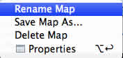

Workbook and multiple sheets
Every XMind file is considered a workbook. And one workbook can maintain multiple sheets, which are separate mind maps. It's so easy to create and modify the sheet.
To creating a new sheet:
- Use shortcut 'Ctrl+T'.
- Double-click on the blank space beside the sheet name at the bottom of the editor viewer.
- Click 'sheet' icon
 on the toolbar.
on the toolbar.

To modify sheet:
- Right-click on the sheet name on the bottom of the editor viewer.
- From the context menu you can make the following changes:
- Rename this sheet.
- 'Save Map as...' lets you save the current sheet as a separated workbook.
- Delete the current sheet from the workbook.
- Delete Other Sheets.
- Properties make you open the properties veiw quickly.

Note: All maps in a workbook are separate from each other. They can have different structures, wallpapers, themes, and so on.